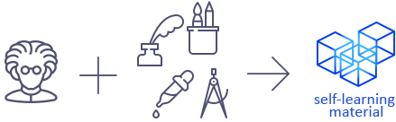
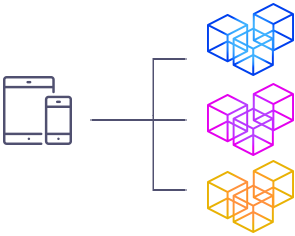
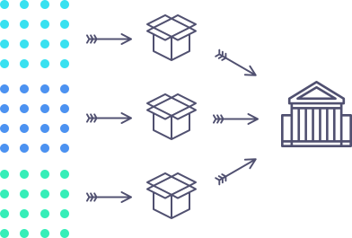
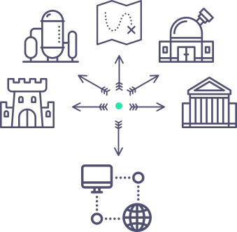

Unorthödox is a platform for sharing self-learning material (often made up of animations, pictures, and written in the most concise way possible) for pre-university curriculum. We believe autodidactism is the future for education.
Unorthödox is a platform for sharing self-learning material (often made up of animations, pictures, and written in the most concise way possible) for pre-university curriculum. We believe autodidactism is the future for education.
The idea is simple. Anyone can be a contributer and design self-learning material for students around the world.

If you are a student and you don't like the way lessons are carrid out in school but you still wish to do well in your college entrance exams, just download our Android/iOS apps and you'll be able to check out all the self-learning materials avaiable and learn the subject by yourself.

Our mission is to help gradually change the way public education is carried out.
The current system of public education focuses mainly on the mass production of degree-holders, modelled in a way resembling that of a factory. Students are packaged into age groups and sent to a centralized manufacturing plant, often referred to as school, to "receive education".

This model of education has a long history. And it is becoming more and more appearnt that, just like many things from the past, it is full of flaws. One thing that is fundamentally wrong about this model is that it is based on conformity, instead of diversity. We believe rather than resembling the manufacturing process of merchandises, education should look something more like this.

School becomes just a part of a student's life. Students have the freedom to do what they want, with autodidactism playing a huge role in their education. A student can visit school just once a week. When a student visits school, she or he goes there to have firendly chat with teachers/advisors and partake in collaborative activies with schoolmates.
School becomes just a place for students to seek mentorship, socialize, find collaborators for their own projects, and make friends. Learning mostly takes place outside of school. A student should be living her or his life, not a "school life".
The above is a simple overview of what the future of public education, which is based on autodidactism, would look like. A lot of details are omitted for this model to actually work.